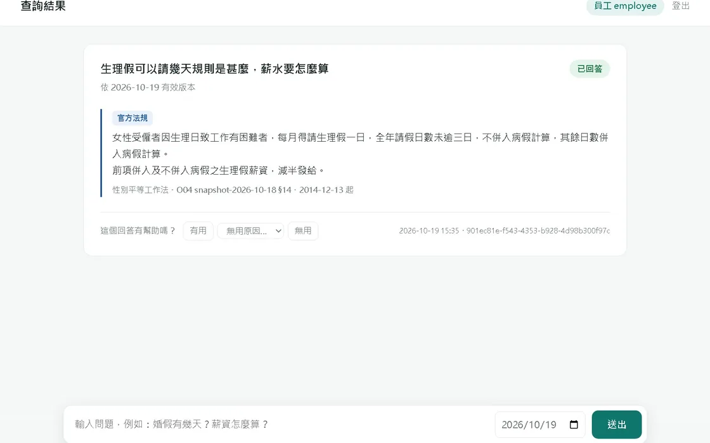
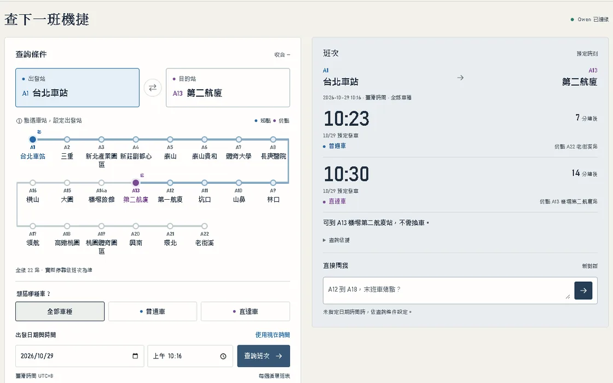

LLM · RAG
專流 ProjectFlow
- 問題
- 專案進度散在 Excel、LINE 與口頭交代，漏掉一步往往到最後才發現；想用 AI 協助，機密資料又不能外流。
- 做法
- 帶領團隊開發專案管理平台，內建 AI 副手：以 RAG 回答文件問題、以 Text-to-SQL 查詢專案資料。
- 成果
- 流程自動把關，審核未過無法進入下一步，文件自動產生；AI 依權限與機密等級，決定用本地模型或遮罩後再送雲端。
- 96.3%文件問答找對段落
- 組長帶領團隊開發
求職中 · AI 工程師 · 台灣
AI 工程師｜LLM 應用・RAG・AI 系統開發
從運輸服務與 AI 專案管理跨域投入 AI 開發。曾帶領團隊開發含 AI 副手的企業專案管理平台，並獨立完成多個可上線的 AI 系統，涵蓋文件問答（RAG）、本地語言模型微調、機器學習預測、後端 API 與容器化部署。
從聽懂需求，到交出能上線、能驗收的 AI 系統。
AI 道路巡查效率提升
AI 辨識人工驗證準確率
台灣未來祭黑客松（隊長）
AI 專案管理與交付經驗
01 / PROJECTS
每個作品都附線上 Demo。
LLM · RAG
RAG

MACHINE LEARNING
*依成本與挽回率假設推估，非實際營運收益。
GEOSPATIAL DATA
NLP · LLM
LLM APPLICATION

02 / EXPERIENCE
AI 專案交付・跨部門溝通・資料品質
日陞空間資訊股份有限公司
負責公路局 AI 鋪面巡查專案：用 AI 辨識道路影像中的路面損壞，取代人工逐段巡查。
第一線旅客服務與臨場應變，培養以使用者為中心的思考。
03 / SKILLS
每項技能都用在上方作品中。
讓 AI 讀懂文件、用中文回答問題
RAG · Embedding · Text-to-SQL
Ollama · Qwen3 LoRA · BERT 微調
把 AI 包成其他系統能呼叫的服務
Python · FastAPI
PostgreSQL · SQLite
穩定上線，並以自動化測試把關
Docker · Git
GitHub Actions · pytest
銜接業主需求與工程團隊
需求訪談 · 驗收指標
標註準則 · 資料品質檢核
逢甲大學 運輸與物流學系 2015 — 2019
京畿大學 韓國・交換學生 2018/08 — 2018/12
04 / CONTACT
希望加入重視 AI 落地的團隊，以 LLM 應用、RAG 與後端開發經驗打造企業 AI 系統；結合專案管理與跨部門溝通背景，把 AI 做成使用者每天會用、也能被稽核的系統。